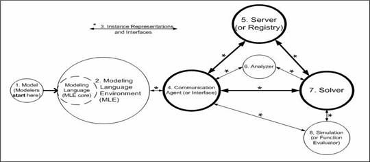

|
OS Components
First we clarify certain terminology usage in this thesis. Most modeling language software starts with a core modeling language along with a language compiler. Gradually the core evolves to include other auxiliary software such as preprocessors and graphical user interfaces (GUIs). By “auxiliary” we mean tools that help in constructing, preprocessing and compiling a modeling language, but not solving the model, which is the function of a solver. Modeling languages are eventually packaged with solvers in distribution. The whole package is usually called a modeling system. In this thesis, however, we stay away from using the term “modeling system” to avoid its potential confusion with the more general optimization system (Figure 2‑1). Instead we call a modeling language without any solvers a Modeling Language Environment (MLE), i.e., a modeling language core with only auxiliary tools. An MLE is a component in an optimization system.

An optimization system contains most of the following components:
- Model. This is where a modeler starts. The model component differs from the rest of the optimization components in that it is an abstraction of an input problem rather than a physical piece.
- Modeling Language Environment (MLE). The core of the MLE is the modeling language, in which an abstract model is defined. The MLE helps in the implementation process. Often a modeling environment may not have a modeling language, but just a spreadsheet or some graphical user interfaces with implicitly defined models. We call it a GUI. From the perspective of Optimization Services, the functions of MLEs and GUIs are the same.
- Instance Representation (or just instance). It is generated by various optimization system components and exchanged among them. For example, an MLE parses a model and generates a problem instance. This problem instance is then sent to a solver to be solved. The instance component differs from other physical components in that it is a data piece rather than software. The following pictures show a generic process of instance generation from modeling languages and an example of communication between the AMPL modeling language and the CPLEX solver.
- Communication Agent/Interface. Communication agents are in charge of communication in a distributed system. No agents are needed in a local environment, in which case interfaces and objects are instantiated in memory and methods are invoked locally. Communication agents are used to send and receive instances. Instance representations and communication agents are least visible to system users, although they constitute the backbones of an optimization system. The following picture shows a generic process of instance generation and communication.
- Server/Registry. A server or registry is the heart of a distributed system. Optimization Services introduces the concept of an optimization registry (Figure 2 2). A registry as a lightweight server in that registry contains information about the software, but not the software itself. An agent first contacts the registry for location information about solvers. Upon response from the registry, the agent takes a second step to contact the solver in a peer-to-peer mode. In both steps, data representation and communication follow the Optimization Services Protocol. Such an arrangement alleviates the burden of any traditional optimization server. Another direct result of the decentralization is that solver providers will correspondingly assume a more independent role to compete for customers’ business. We envision decentralization as the future in distributed optimization for it provides an encouraging environment for the development of optimization systems and components.
decentralized system (using registry)

centralized system (using server)
- Analyzer. Analyzers become a highly integrated and critical part of the OS framework, mainly due to the introduction of the optimization registry and the corresponding discovery mechanism in a decentralized optimization system. The output of an analyzer can be used by a solver query engine to locate the appropriate solvers for the model analyzed by the analyzer. Without analyzers, an optimization system can potentially involve much human interaction. So analyzers play a key role in automation.
- Solver. Being the real “contents” of an optimization system, solvers make the whole system meaningful and are what users really need. Any solver on an Optimization Services system should take the Optimization Services instance Language (OSiL) as its input and generate the Optimization Services result Language (OSrL) as its output. A solver, however, does not usually carry out computation directly on the instance representation. Rather an instance reader parses the input into the internal objects or data structures required by the solver’s algorithm. Optimization Services provides libraries for reading the standard OSiL input (OSiLReader) and writing the OSrL output (OSrLWriter), as shown in the following figure.
- Simulation. A simulation is a black box function evaluator. The simulation engine may or may not reside with the solver. If the simulation is a simple function that stays locally with the solver, it is usually called a function evaluator, a function pointer, an evaluation routine, or an expression tree. In an optimization system, simulations are usually invoked by a solver. Most of the optimization solver algorithms involve some iterative schemes and each iteration may potentially involve an invocation of the simulation.
There can be many other components in the optimization system such as problem repositories and solver benchmarkers. However the above eight components are the key ones. They are the main targets to be “regulated” by the Optimization Services framework. When all these components are built according to the Optimization Services (OS) framework, we call them “OS-compatible,” and we call the optimization system an Optimization Services system.
|

{kind=link}
{kind=link}
{kind=link}
{kind=link}
{kind=link}
{kind=link}
{kind=link}